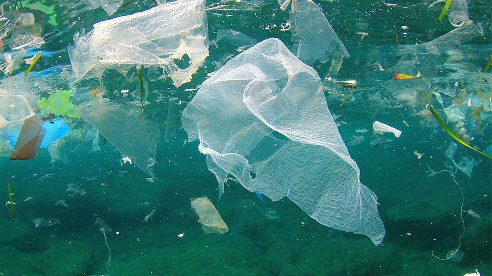

Menaces sur les océans
Pollution plastique, surpêche et réchauffement climatique mettent en danger les écosystèmes marins.


Réduire le plastique
Limiter les déchets jetés en mer.

Protéger la faune
Respecter les espèces marines.

Sensibiliser
Informer et éduquer le public.